Core & support services
9— the portfolio, drawn in the same hand · white bg, ready to knock out
Operational Excellence aaS
Find the 20% your processes waste — ≥20% efficiency gain.

Savings aaS
AI reads your contracts — 10–40% vendor spend saved.

Service & Vendor Consolidation aaS
47 vendors → 5 strategic partners; >80% via top-5.

Complex RFx aaS
Zero Vendor Deviation — complex RFPs in 6–8 weeks.

Vendor Management aaS
Full lifecycle governance — 10–30% spend reduction.

managedsuppliers
Real-time, AI-driven vendor & performance management.
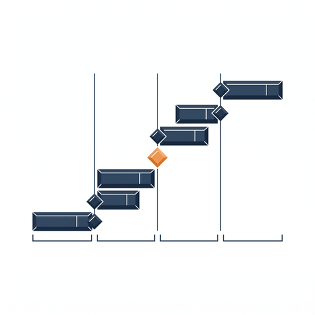
Program & Project Management
Structured governance so nothing slips through the cracks.
Change & Communication
Transformation fails when people resist — we keep them on board.
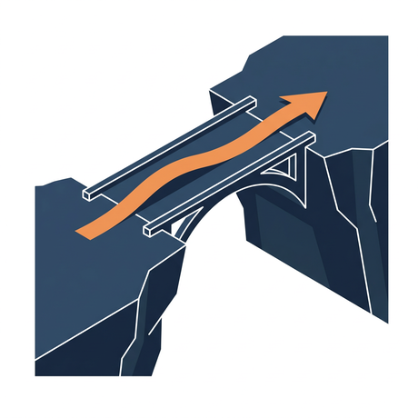
Transition Management
Seamless handovers, zero service disruption.
Climbing gear
7— the core hardware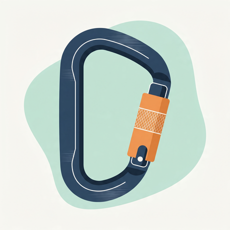
Carabiner
Secure vendor onboarding — a connection you can hang load on.
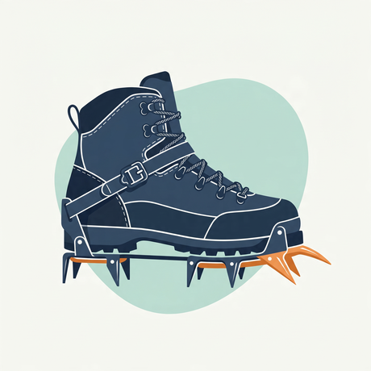
Crampons
Hands-on delivery — traction when it gets steep.
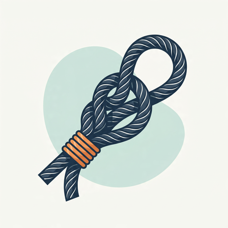
The rope tie-in
Two strands, one knot — your risk is our risk.
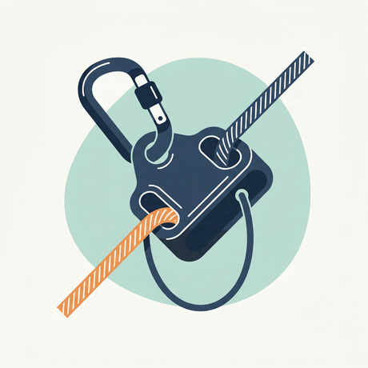
Belay device
Risk let down slowly, and on purpose.
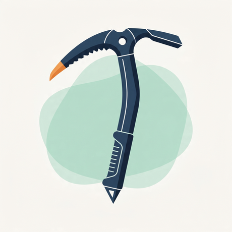
Ice axe
Plant it ahead, then pull the program up.
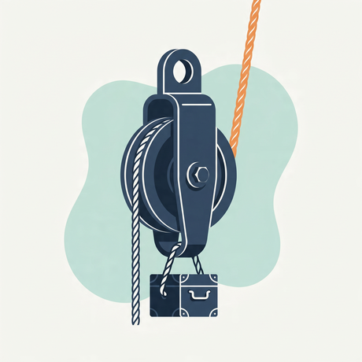
Pulley & haul
Mechanical advantage — we do the heavy lifting.
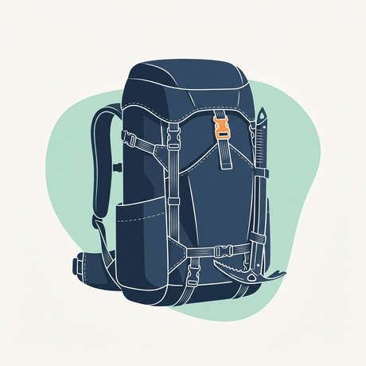
The pack
What you carry out — capability that stays with your team.
Instruments & kit
4— how we see and pace the climb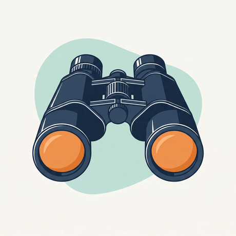
Binoculars
Find the 20% your processes waste — read the landscape.
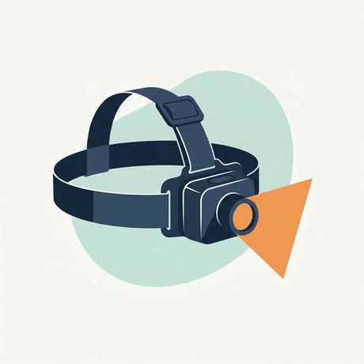
Headlamp
Visibility in the dark — light where the spend hides.
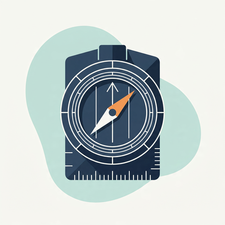
Compass
Strategy & navigation — the bearing before the move.
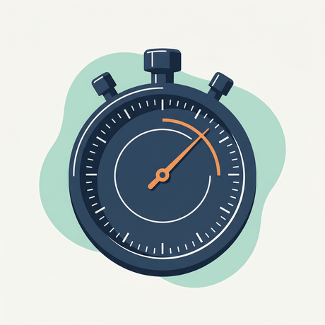
Stopwatch
Complex RFPs in 6–8 weeks, not 4–6 months.
Scenes & people
5— the human, narrative moments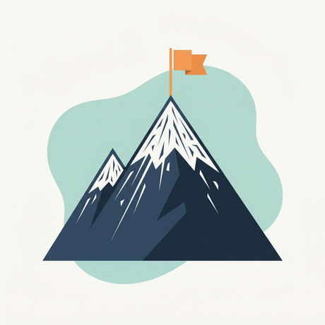
The summit, flagged
We own the result, not the hours.
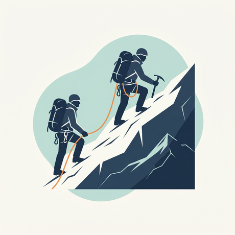
Roped on the ridge
Same rope, same risk — we climb with you.

The wrist-lock grip
The summit reached together, hand in hand.
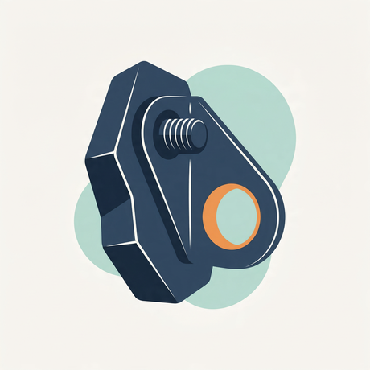
The bolt in the rock
Something that holds when it's loaded.
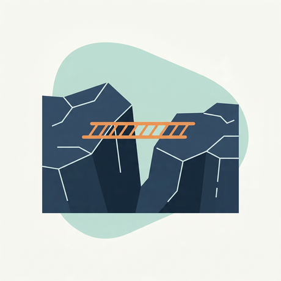
Ladder over the crevasse
Seamless handovers, zero disruption.
Concepts & data
5— the business, drawn in the same hand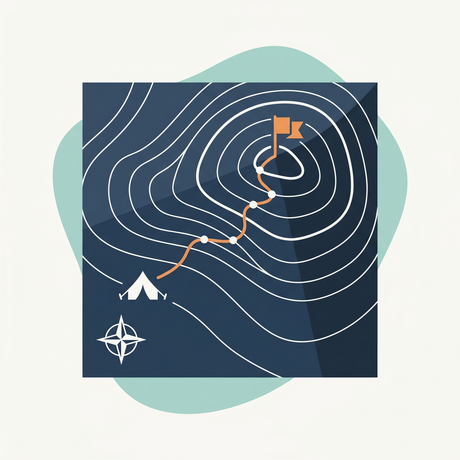
The route on the topo
See → Size → Simplify → Source → Govern → Automate.
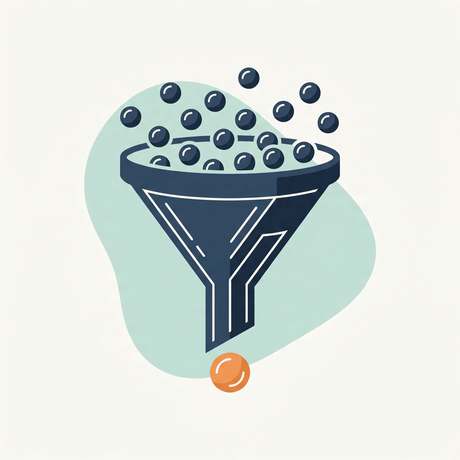
Many in, few out
47 vendors → 5 strategic partners.
Reading the contract
AI reads your contracts. You keep the savings.
The shield
Governance that protects when it's tested.
The cockpit
Real-time, AI-driven vendor & performance management.
Realistic variant
1— a different register, transparent-ready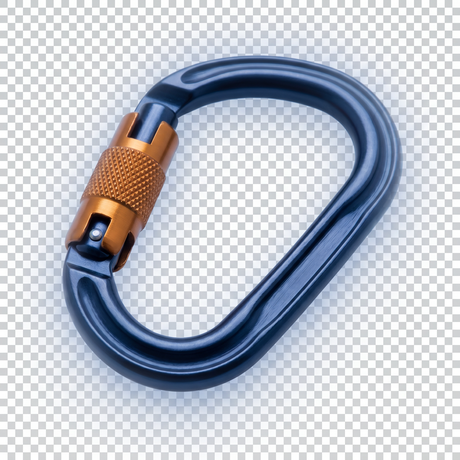
Photoreal · transparent PNG
The carabiner, for real.
The same hero object rendered photographically — navy-anodized body, orange lock sleeve — on a true transparent background (shown on a checkerboard). The proof that the system also stretches to a premium, realistic register.
Use where a flat icon feels too light: case-study openers, hero bands, the bled-to-page editorial moment. Drops onto any surface.